Label-free interaction data
For the here shown use case Perseus 1.5.1.6 was used.
1 Dataset
This is label-free data for the identification of interactions. It consists of three repeats of a pulldown and three controls.
2 Data preparation
2.1 Loading
Load the file “proteinGroups.txt” from the “combined/txt” folder of the MaxQuant output. Load Generic matrix upload is denoted by the green arrow on the top left corner of the Perseus window or load the file using the drag and drop function of Perseus.

Make sure to load the six LFQ intensities as main columns, which correspond to three repeats of a pulldown and three controls.
2.2 Filtering
After loading the matrix, we filter out the reverse proteins and the proteins that are only identified by site. The contaminants are deliberately not filtered out to show some things later. The filtering is done using the function Processing → Filter rows → Filter rows based on categorical column, because both the “Reverse” column and the “Only identified by site” column are categorical.
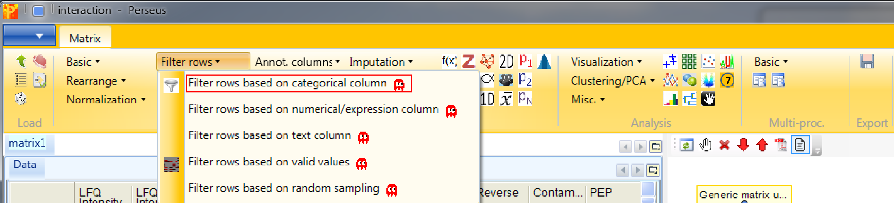
First, we filter out the reverse hits. Reverse hits are indicated by a “+” in the “Reverse” column, so to filter out these hits all rows containing a “+” will be removed from the matrix. To do so the column “Reverse” needs to be selected, “+” is the value we are looking for and is selected by default. No further changes are necessary, because we want to remove the matching rows from the matrix. This results in a matrix, where the value in the “Reverse” column of all rows is empty.

Second, we filter out the hits that are only identified by site. These are indicated by a “+” in the “Only identified by site” column, so to filter out these hits all rows containing a “+” will be removed from the matrix. To do so the column “Only identified by site” needs to be selected, “+” is the value we are looking for and is selected by default. No further changes are necessary, because we want to remove the matching rows from the matrix. This results in a matrix, where the value in the “Only identified by site” column of all rows are empty.

2.3 Transformation
To gain better behavior of the data in statistical tests and also in imputation, normally distributed data is advantageous. Therefore we logarithmize the data using Processing → Basic → Transform.

Since the default formula is \(log_2(x)\) and all expression columns are selected, nothing needs to be changed.

To verify, if the data is now more or less normally distributed, we plot histograms of each intensity column separately with Analysis → Visualization → Histogram.


The results will be displayed in an extra tab on the same matrix containing the histogram functionalities. And indeed the intensities are each more or less normally distributed.
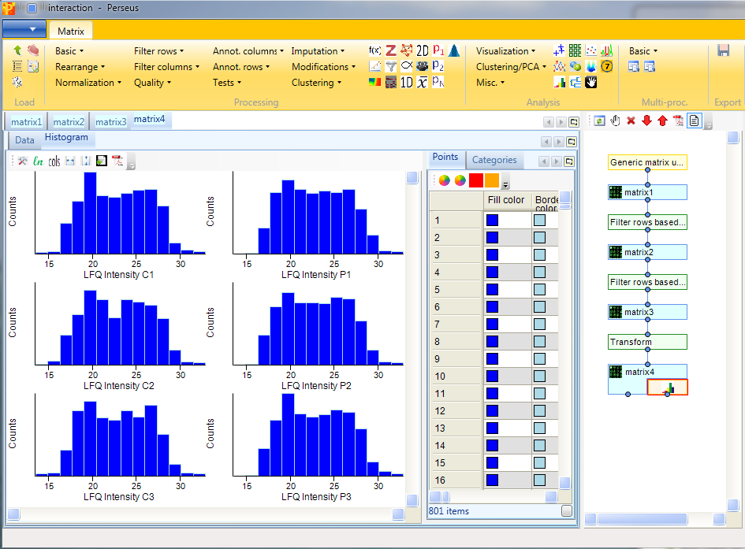
2.4 Grouping of samples
Before filtering the data for valid values, we group the samples according to replicates using Processing → Annot. rows → Categorical annotation rows.

You can leave the name of the grouping to the default value “Group1” and just shorten the rest of the column names according to replicates. Also giving each group a different name is possible, this is a matter of taste.

2.5 Filtering according to groups
Identifications with just one reported intensity are usually not very useful for further analyses. This is why we filter for valid values with Processing → Filter rows → Filter rows based on valid values.
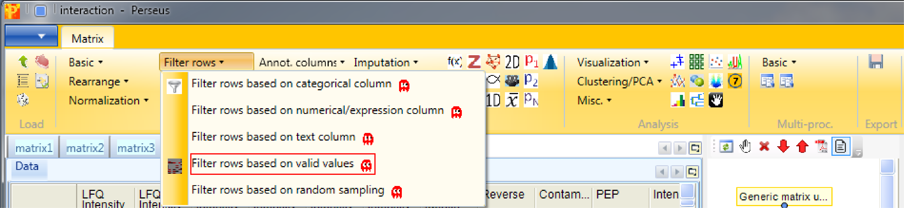
We want to have “3” valid values “in at least one group”, because interaction partners without any background affinity would not appear in the control, but should still appear with three valid values in the actual pulldown.
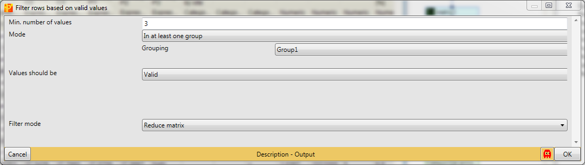
2.6 Imputation
Then we impute missing values from normal distribution with Processing → Imputation → Replace missing values from normal distribution.

The imputation function will look at the distribution of values, assuming that they are normally distributed and calculates width and center of the distribution. Then Perseus will shrink the distributions to a factor of “0.3” (width), shift it down by “1.8” (down shift) standard deviations and simulate some random values that make up values to fill up the missing values. Also we take the whole matrix (mode).
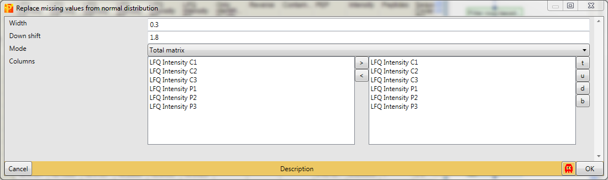
Using histograms as before Analysis → Visualization → Histogram, we are able to look at the distributions of the imputed values. Therefore we generate histograms for all LFQ intensity columns. The results will be displayed in an extra tab on the same matrix containing the histogram functionalities as before. It is important that the imputed values do not form a separate normal distribution, start around the same point in the replicates and are narrower than the distributions of the measured values.

3 Experimental quality check
3.1 Multi-scatter plot
To be sure, that the experiment worked one can use multi-scatter plots with Analysis → Visualization → Multi scatter plot to analyze the correlation between the samples.
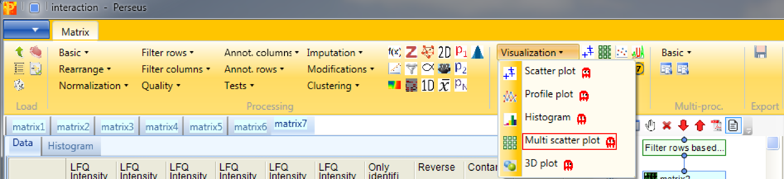
Therefore we have to plot all six samples against each other.

We can observe, that the Pearson correlation (calculation option highlighted by a red rectangle) is good between the samples. Also that the correlation within the groups is a bit higher than between the groups of replicates.
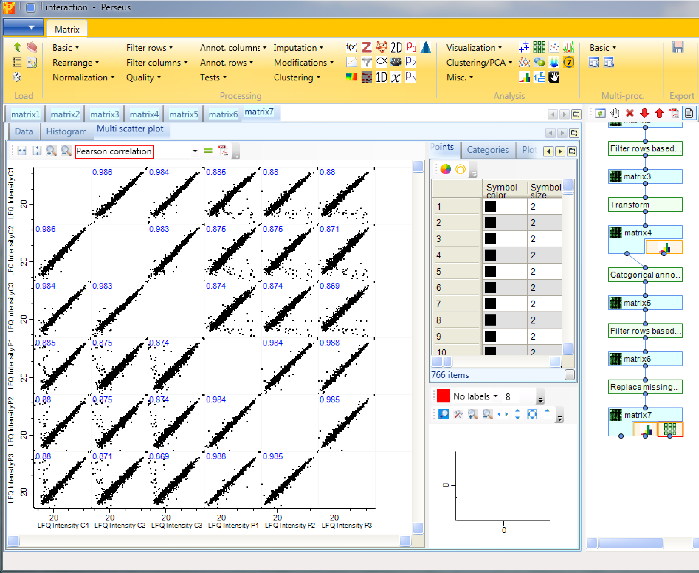
3.2 Hierarchical clustering
Another option to figure out, if the experiment worked is hierarchical clustering in Analysis → Clustering/PCA → Hierarchical clustering.

Since we just have six known samples, we are not interested in the column tree. So we are more curious about the intensity profile of all the samples. The results will be displayed in an extra tab on the same matrix containing the hierarchical clustering functionalities.
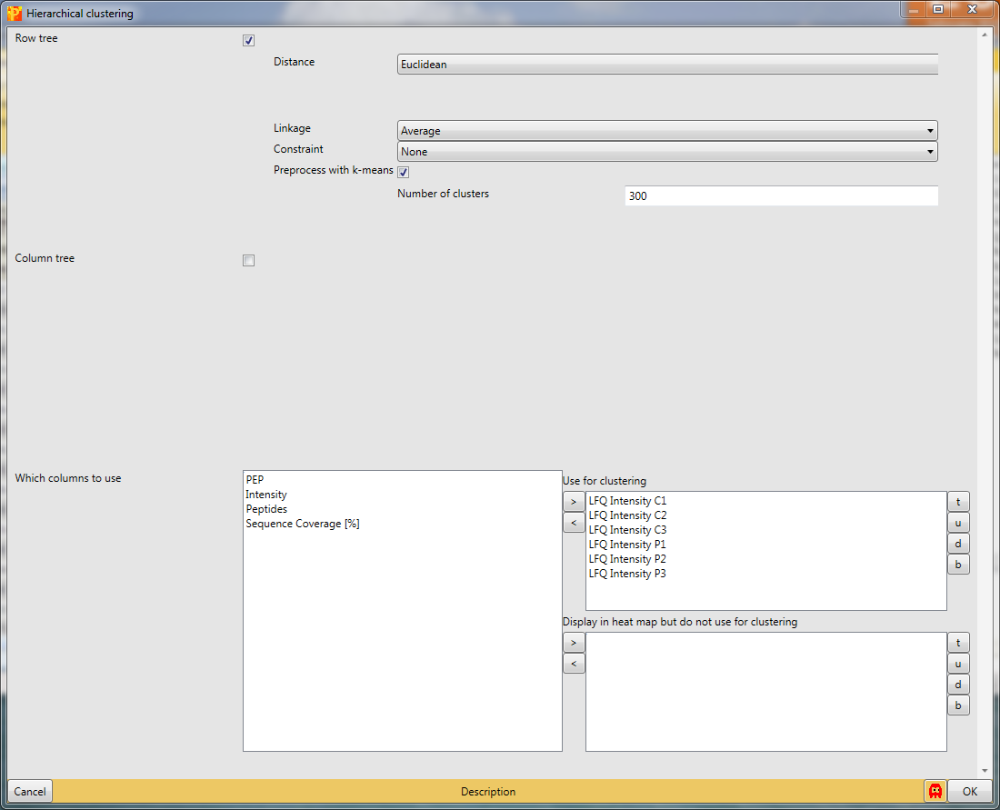
The default color gradient is from green (low values) to red (high values), which is very nice for ratios, but for intensities another color gradient could be used, which is called “rainbow gradient”. It goes from dark cold colors to bright warm colors. To change it click on the “change color gradient” button in the “Clustering” tab (highlighted by a red rectangle) and the current gradient will be displayed in a pop-up window.

To change the colors just click on the position in the gradient you want to change and select a color in the “Color” window that pops up until you have the gradient you desire.

At first glance all the samples look more or less the same, which is good. But, if we take a closer look at the top of the heatmap, we can find a group of proteins that show distinct behavior between the groups. To figure out which proteins these are we have to zoom in by holding the left mouse key and dragging. And what we can see is that the highlighted cluster of proteins belong mainly to anaphase promoting complex.
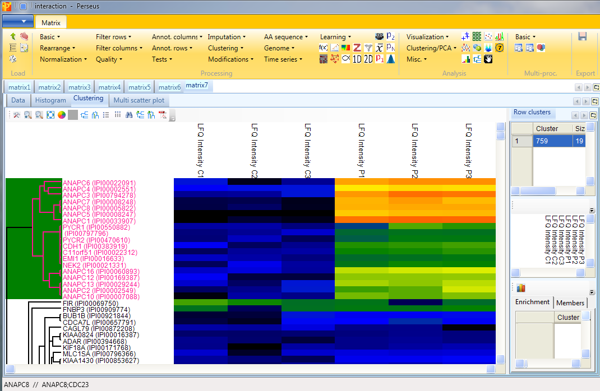
Now we can investigate the behavior of the contaminants, since we deliberately did not filter them in the beginning. To highlight them we have to click on the “Configure row names” button in the “Clustering” tab
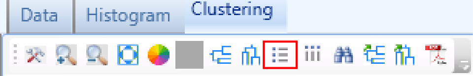
and change “Row color bar” to “Contaminant”.

This results in an additional column on the left hand side of the heatmap, where contaminants are highlighted in blue (the rest is grey). These contaminants do not behave like a contaminant and are thus potential interaction partners.
4 Identifying interactors
4.1 Two sample t-test
Now we want to find the interactors using Processing → Tests → Two-samples tests.

The T-test assumes that you have equal variance within the groups of replicates. s0 is in essence a minimal fold change, which means even if a protein gives you a very good p-value in case the fold change is below that value (s0) it won’t be significant. As a rule of thumb we use s0 = 2 and FDR = 0.01, what usually gives nice results. This results in a new matrix with additional columns: “t-test Significant”, “-Log t-test p-value”, “t-test Difference” and “test statistic”.
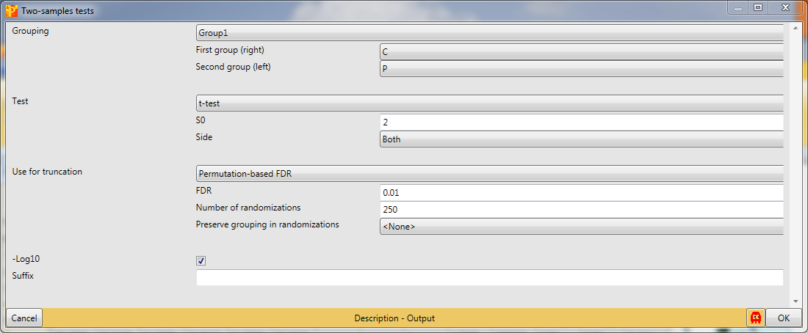
4.2 Scatter plot
Now to view the interactors we have to generate a scatter plot Analysis → Visualization → Scatter plot.
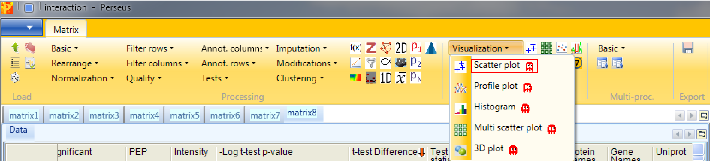
So we have to plot the columns against each other. This results in an extra tab on the same matrix containing the scatter plot functionalities.

We are interested in the “t-test Difference” vs. “-Log t-test p-value” (highlighted by a blue rectangle). Then select “t-test Significant” in the “Categories” tab and show the “Gene Names” of these hits (highlighted by green rectangles). Since we used “both” sides in the significance test, we are able to find significant hits on both sides.

It is important to keep in mind that there is no universal s0 and FDR parameter value that guarantees good results. One has to optimize the values for every experiment. This optimization process is covered in the following section.
4.3 Volcano plot
The volcano plot is the unified function of the two sample t-test and the scatter plot with the additional option to easily optimize the s0 and FDR parameter. So to identify and visualize the interactors in one step use Analysis → Misc. → Volcano plot.
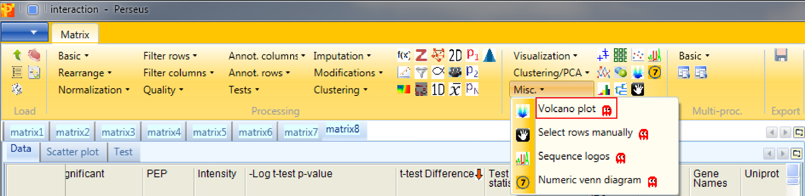
As in the two sample t-test one has to specify the grouping that should be used for the significance test, which test should be applied and the parameters of the test. Since we have just one grouping and want to use the t-test we just have to change s0 to 2 and FDR to 0.01. This results in an extra tab on the same matrix containing the volcano plot functionalities.

The results are shown in a volcano plot with the cutoff curve indicating which hits are significant. To highlight the test significant hits we have to select “t-test Significant” in the “Categories” tab and choose “Gene Names” as labels (highlighted by green rectangles). Also other cutoff parameters, s0 and FDR, can be applied by typing in the new chosen values (blue rectangle). Don’t forget to refresh the plot (red rectangle).

4.4 Profile plot
Another option to find and visualize interactors is to use Analysis → Visualization → Profile plot. This function has no input parameters and the results are shown in an extra tab on the same matrix containing the profile plot functionalities.
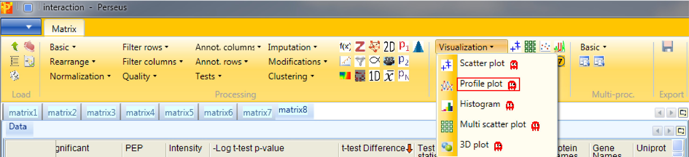
First we have to search for the bait protein CDC23 and get its profile. This is achieved by clicking the right mouse button in the “Profiles” tab (orange rectangle in the figure at the end), selecting “Find…” and searching for “CDC23” in the whole table.

Then go to the “Reference profile” tab (green rectangle) and search for the 20 next neighbors (red rectangle) and press the start button (blue rectangle). If you go now back to the “Profiles plot” (orange rectangle) the selected proteins are at the top of the matrix and are waiting to be investigated.
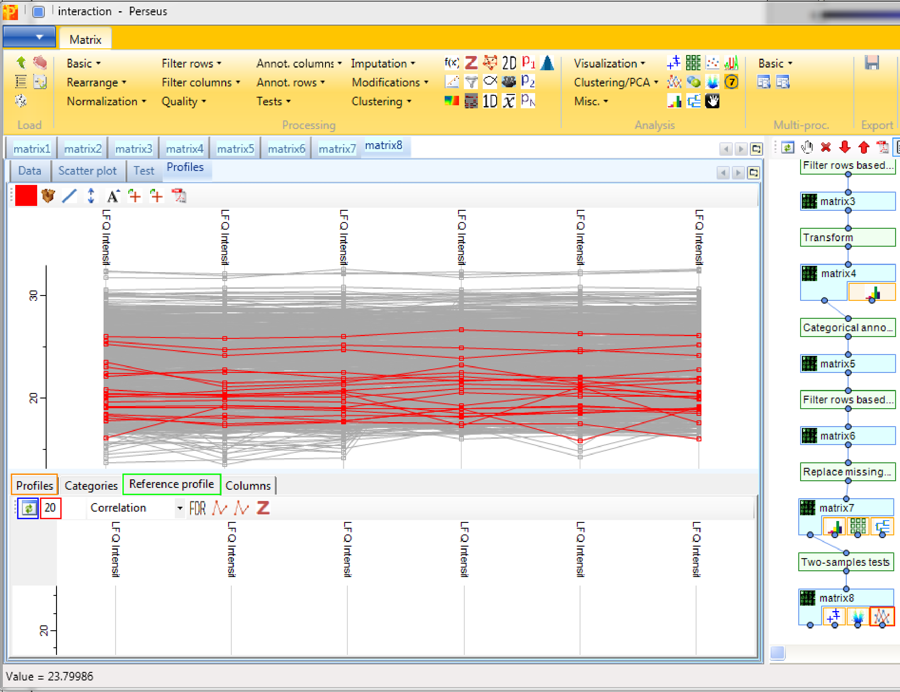